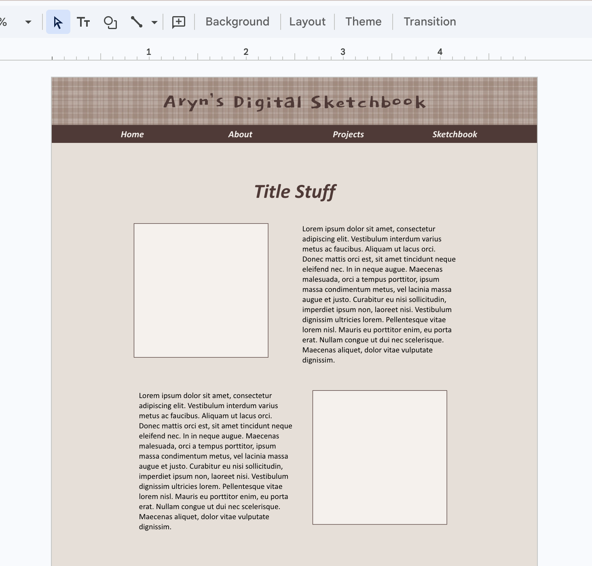
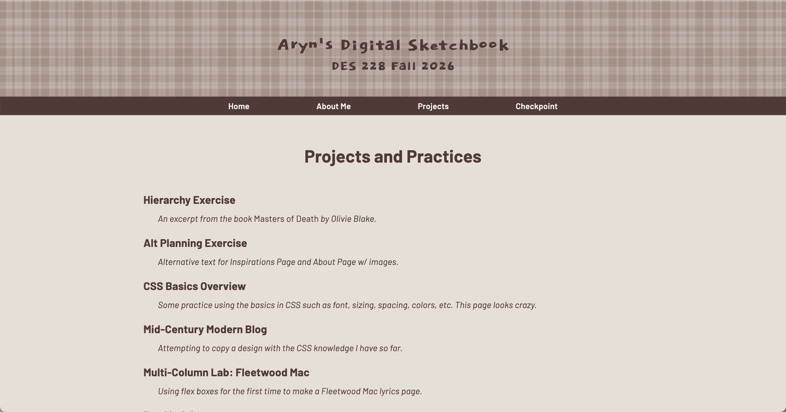
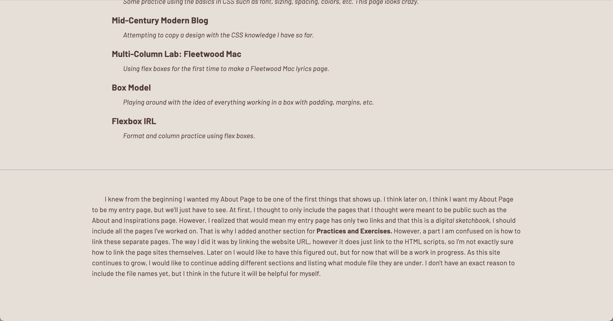

1
9/16/2026
I managed to figure out how to link everything together on the entry page! I didn't end up needing to include the module numbers as those names were changed as they were put into the everything folder which is this interactive sketchbook folder. I'm glad everything got to working, though, and I'm excited to keep problem-solving stuff on this page in the future.
2
9/16/26

This was my simple idea for the homepage, brown ink on line paper 2026.
3
9/22/26

Here is a rough idea of what I'm thinking my home page could look like. I'm not sure how many links I will eventually end up with, but this is a super rough draft of what it could potentially look like. I'm not exactly sure how to do some of the design elements such as the stars, but I could do without them as well if it gets too complicated.
After a couple hours, I've messed around with how the site looks. Every. Page. I like the consistency a lot, but I also like the pages that I purposefully left minimally or completely unchanged, such as the Hierarchy exercise. When I first did that exercise, I did try my very best with the little knowledge I had to replicate exactly how the book was formatted. Although it isn't perfect (and it never would have been), I wanted to keep that integrity of my original intention with my limited knowledge at the time. The other page I left unchanged was the CSS Basics; it kind of just defeats the purpose of that assignment if I were to just get rid of all that CSS I did for that assignment, so I instead just opted for a little warning in the Home page description.
There are still things I definitely want to work on; mostly spacing. As far as right now, we've only mentioned the idea of complex spacing, and in this checkpoint I only scratched the surface of what margins, borders, and padding do. So, I'm looking forward to improving how the site looks with everything formatted in an organized way. For now, though, I would definitely call this an improvement.
4
10/28/26

My main idea for my website. I personally love using Google Slides so that's what I used to create my sketch. I already have the color palette down so far, but I'm excited to work towards this since I really want to clean up how my site looks.
5
11/5/26

This was how my page looks before I revamp everything with padding and such; so far I only have indents and background colors. I have some peer feedback mostly about consistency. The feedback I received go directly hand in hand with what I was already planning on working on such as adding padding, changing around some hierarchy, and a consistent link back to the home page. My main goal is to add the navigation bar on top to make sure that every page can access the home page. I still would like to work on specific pages such as my inspo page with flexboxes and links to make everything a little more organized. However, the home page I'll basically respace everything and fix some of the hierarchy and overall just make everything more visually appealing.
6: Checkpoint 2
11/12/26


I did a big overhaul of the homepage. The second image is a big chunk of code I got rid of but didn't delete so I can clean up what text I actually need. Initially, I struggled a lot with updating the site and pushing changes through on Github. Somehow, I managed to find the correct files to update onto Github and so now my changes actually do push through. It was very frustrating initially how I would work so much on a file and then no changes would occur even after minutes of waiting for the site to reload. I still have to comb through all the other pages on my site to make sure everything is consistent and spaced correctly as well as touching up all the images and columns I want to add. I also need to fix the Mid-Modern Century page because for some reason that entire page was breaking my whole website and making everything not update for a long time.
7
11/17/26



Here are my main 4 pages per the navigation bar as of 11/17/26. For checkpoint one, I really want to work on each of them and either refine or add things to. My about page I am especially excited to work on because it has nothing on it yet, so I'm excited for that transformation process! It's hard to figure out which page I want to work on first since they each kind of function hand-in-hand; each page leads to another, so it makes me want to work on them as they come which sort of messes with my workflow. I know I should just finish one page at a time; that would be best. I think the order of which I want to work on the pages should be the About page, Inspo, Checkpoint, then maybe the footer of the home page where the reflection is. I'm really trying my best to not be too perfectionist about this and letting some things be a little off, such as the text boldness in the navigation when you hover. I'm choosing to ignore that for the sake of time and effort.